무선설비산업기사 (2014-10-04 기출문제)
1과목: 디지털 전자회로
1. 다음 중 다이오드의 종류에 따른 용도로 틀린 것은?
- PIN 다이오드 : RF 스위치용
- 버랙터(Varactor) 다이오드 : 전압제어 발진기용
- 임팻(IMPATT) 다이오드 : 디지털 표시장치용
- 제너 다이오드 : 전압안정화 회로용
(정답률: 71%)

2. 다음 그림과 같이 회로에 정현파가 인가됐을 때 나타나는 파형은? (단, 다이오드 D1의 항복전압은 VZ1=5[V], D2의 항복전압은 VZ2=6[V]이고, 각 다이오드는 이상적이라고 가정한다.)
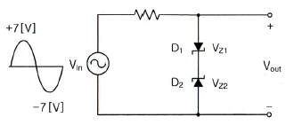
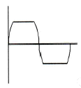
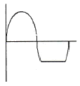
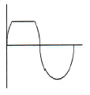
(정답률: 87%)
3. 반송파의 위상과 진폭을 상호 직교하며 신호를 혼합하는 변조 방식은?
- ASK
- FSK
- PSK
- QAM
(정답률: 92%)
4. 다음 중 클램퍼 회로를 구성하는 부품이 아닌 것은?
- 다이오드
- 저항
- 커패시터
- 인덕터
(정답률: 70%)
5. 다음 중 부궤환 증폭회로의 특징이 아닌 것은?
- 이득증가
- 비선형 일그러짐 감소
- 잡음감소
- 고주파 특성의 개선
(정답률: 75%)
6. 증폭도 A인 증폭기에 궤환율 β로 정궤환 되었을 경우 발진이 이루어지는 조건으로 맞는 것은?
- Aβ = 1
- Aβ = 0
- Aβ > 1
- Aβ < 1
(정답률: 88%)
7. 트랜지스터의 스위칭 시간에서 Turn-off 시간에 해당되는 것은?
- 하강시간
- 축적시간 + 하강시간
- 상승시간 + 지연시간
- 축적시간
(정답률: 84%)
8. 다음의 논리회로도가 나타내는 플립플롭회로는 무엇인가?
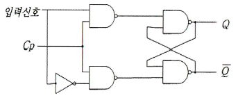
- T 플립플롭
- D 플립플롭
- J-K 플립플롭
- S-R 플립플롭
(정답률: 88%)
9. 전압 변동률이 15[%]의 정류 회로에서 무부하시 전압이 6[V]일 때, 부하시 전압은 약 얼마인가?
- 2.4[V]
- 3.5[V]
- 4.7[V]
- 5.2[V]
(정답률: 62%)
10. 연산 논리 장치라 하며 CPU 내에서 모든 연산이 이루어지는 곳을 무엇이라고 하는가?
- LSI
- ALU
- Accumulator
- Flag Register
(정답률: 79%)
11. 다음 그림의 회로에서 주파수가 1,024[kHz]인 디지털 신호가 입력되었을 경우 최종 출력주파수(Fo)는 얼마인가?
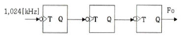
- 512[kHz]
- 256[kHz]
- 128[kHz]
- 64[kHz]
(정답률: 81%)
12. 다음 그림의 연산 증폭기 회로의 전압증폭률(Vo/Vs)은 얼마인가?
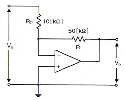
- -5
- -1
- 5
- 10
(정답률: 79%)
13. 다음 그림의 발진기 회로에서 궤환율(β)은 얼마인가? (단, R=1[kΩ], R1=18[kΩ], R2=2[kΩ], C=1[μF]이다. )
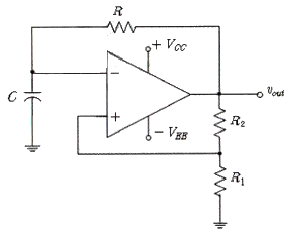
- 0.6
- 0.7
- 0.8
- 0.9
(정답률: 59%)
14. 다음 중 비동기식 카운터에 대한 설명으로 틀린 것은?
- 동기식 카운터에 비해 입력신호의 전달지연시간이 길다.
- 동기식에 비해 논리상의 오차 발생비율이 많다.
- 구조상으로 동기식에 비해 회로가 간단하다.
- 같은 클럭펄스에 의해 트리거 된다.
(정답률: 62%)
15. 논리함수
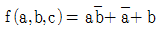
의 부정을 구한 것은?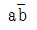
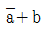
- 0
- 1
(정답률: 72%)
16. 다음 중 음성 신호의 송신측 PCM 과정이 아닌 것은?
- 표본화
- 부호화
- 양자화
- 복호화
(정답률: 87%)
17. 다음 중 낮은 주파수 대역에서 높은 주파수 대역에 걸쳐 일정한 크기의 스펙트럼을 가진 연속성 잡음은 무엇인가?
- 트랜지스터 잡음
- 자연잡음
- 백색잡음
- 지터잡음
(정답률: 90%)
18. 2n개의 입력 데이터를 n개의 스트로브 제어신호를 이용하여 입력 데이터 중 1개를 선택하는 기능을 갖는 논리회로를 무엇이라고 하는가?
- 디멀티플렉서
- 디코더
- 인코더
- 멀티플렉서
(정답률: 85%)
19. 다음 중 반파정류기의 리플 함유율을 적게 하는 방법으로 맞지 않는 것은?
- 입력측 평활용 콘덴서의 정전용량을 크게 한다.
- 출력측 평활용 콘덴서의 정전용량을 작게 한다.
- 평활용 초크코일의 인덕턴스를 크게 한다.
- 시정수를 작게 한다.
(정답률: 66%)
20. 기억된 정보를 보존하기 위해 주기적으로 리플래시(Refresh)를 해주어야 하는 기억소자는?
- Dynamic ROM
- Static ROM
- Dynamic RAM
- Static RAM
(정답률: 85%)
2과목: 무선통신 기기
21. 다음 중 무선통신에서 이용하는 다이버시티 방법이 아닌 것은?
- 슬롯
- 시간
- 공간
- 주파수
(정답률: 82%)
22. 레이더에서 동일 거리에 있는 2개의 목표물을 2개로 분리해서 볼 수 있는 능력은 무엇인가?
- 방위 분해능
- 거리 분해능
- 최대 탐지거리
- 상의 선명도
(정답률: 84%)
23. 다음 중 AM 수신기에 비해 SSB 수신기가 갖는 특성을 잘못 설명한 것은?
- 대역폭이 약 1/2이다.
- 국부 발진기의 높은 주파수 안정도가 요구된다.
- 충전 시정수가 짧고 방전 시정수가 긴 자동이득제어(AGC) 회로가 필요하다.
- 헤테로다인 검파를 수행할 수 없다.
(정답률: 77%)
24. 다음 중 슈퍼헤테로다인 수신기의 주파수 변환부를 구성하는 요소가 아닌 것은?
- 주파수 혼합기
- 대역통과 필터
- 저주파 증폭부
- 국부 발진기
(정답률: 55%)
25. 디지털 데이터 '0'과 '1'을 FSK 통신 방식으로 변조하기 위하여 몇 개의 반송파가 필요한가?
- 1개
- 2개
- 3개
- 4개
(정답률: 88%)
26. 다음 중 위성통신에 대한 설명으로 틀린 것은?
- 주로 SHF대를 이용하고 위성에 의한 원거리 통신을 한다.
- 위성통신시스템에서는 다중화 기술의 채택이 불가능하다.
- 위성통신은 마이크로웨이브 통신기술과 유사하다.
- 정지궤도에 떠있는 통신위성은 중계소 역할을 한다.
(정답률: 85%)
27. 우리나라 셀룰러 디지털 이동통신의 무선접속 방식은?
- FDMA(Frequency Division Multiple Access)
- TDMA(Time Division Multiple Access)
- SDMA(Space Division Multiple Access)
- CDMA(Code Division Multiple Access)
(정답률: 76%)
28. 다음 중 마이크로파 통신에 대한 설명으로 옳지 않은 것은?
- 공중선 이득을 크게 할 수 있다.
- 외부잡음의 영향에 약하다.
- 광대역 전송이 가능하다.
- 주로 가시거리 통신이 행해진다.
(정답률: 77%)
29. 다음 중 이동통신 시스템의 채널 용량을 증가시키기 위한 방법으로 볼 수 없는 것은?
- 대역폭을 넓힌다.
- 신호전력을 증가시킨다.
- 잡음전력을 감소시킨다.
- 비화통신방식을 사용한다.
(정답률: 67%)
30. 다음 중 마이크로파 다중통신방식에서 전파손실을 경감시키기 위한 반사판 사용 방법으로 적합하지 않은 것은?
- 입사가 얕은 경우는 반사판을 2장 사용한다.
- 반사점에서 입사각과 반사각은 각각 90°로 한다.
- 반사판의 위치는 송수신점 사이의 중앙부근에 둔다.
- 반사판의 면적을 크게 한다.
(정답률: 84%)
31. AC 전압을 DC 전압으로 변화시키는 장치를 무엇이라 하는가?
- AVR(Automatic Voltage Regulator)
- UPS(Uninterruptible Power Supply)
- 인버터(Inverter)
- 컨버터(Converter)
(정답률: 80%)
32. 극판의 연결 상태나 전지의 연결 상태의 차이로 생기는 충전 부족 상태를 보충하기 위해 행하는 충전은?
- 과 충전
- 평상 충전
- 균등 충전
- 부동 충전
(정답률: 88%)
33. 다음 중 태양광 설치 후 전기료에 대한 설명으로 올바른 것은?
- 태양광 설치 후의 전기료 절감은 지역별 차이가 전혀 없다.
- 설치장소의 일사량, 지형, 기후 조건에 따라 차이가 있다.
- 설치장소의 인구수에 따라 차이가 발생된다.
- 설치 회사의 설치 인력 수에 따라 차이가 있다.
(정답률: 89%)
34. 다음 중 축전지의 분극 작용과 관련 없는 것은?
- 전류의 반대 방향으로 작용하는 힘이다.
- 축전지의 가수 방출은 분극을 증가시킨다.
- 화학적 에너지를 전기적 에너지로 변환하는 장치이다.
- 연축전지에 있어서 방전 전압을 감소시키고 충전 전압을 증가시킨다.
(정답률: 64%)
35. 어떤 시스템의 출력 전력을 측정하였더니 20[dBm]이었다. 이를 [mW]로 나타내면?
- 400[mW]
- 300[mW]
- 200[mW]
- 100[mW]
(정답률: 73%)
36. 전력이 10[mW]일 때 dBm과 dBW의 관계를 바르게 설명한 것은?
- dBm으로는 10이고 dBW로는 -20이다.
- dBm으로는 10이고 dBW로는 -30이다.
- dBm으로는 1이고 dBW로는 -20이다.
- dBm으로는 1이고 dBW로는 -30이다.
(정답률: 81%)
37. 1:2의 전원변압기를 통하여 AC 100[V]의 교류입력에 전파 정류되면 출력의 평균 DC 전압은 약 얼마인가?
- 300[V]
- 270[V]
- 200[V]
- 180[V]
(정답률: 78%)
38. 연축전지를 과도한 방전상태로 오랫동안 방치하게 되면 축전지를 더 이상 사용할 수 없게 된다. 이유는 무엇인가?
- 전해액의 비중이 너무 낮아졌기 때문에
- 극판에 영구적인 황산납이 형성되기 때문에
- 황산이 물로 변했기 때문에
- 극판에 영구적인 산화납이 형성되기 때문에
(정답률: 81%)
39. 정류 장치의 특성 해석에 이용되는 파라미터로서 입력교류전력에 대한 출력직류전력의 비로 나타내어지는 것을 무엇이라 하는가?
- 맥동율
- 전압변동율
- 정류효율
- 최대역전압
(정답률: 81%)
40. 다음 중 고주파 회로를 측정할 경우 측정기의 올바른 사용법이 아닌 것은?
- 측정기의 접지단자를 접지시킨다.
- 측정회로와 거리를 짧게 결선하여 측정한다.
- 측정기를 차폐시킨다.
- 측정회로와 연결되는 선은 가능한 가는 선을 이용한다.
(정답률: 83%)
3과목: 안테나 개론
41. Maxwell 방정식을 이루는 법칙과 관계없는 것은?
- 패러데이(Faraday) 법칙
- 암페어(Ampere) 법칙
- 스넬(Snell) 법칙
- 가우스(Gauss) 법칙
(정답률: 84%)
42. 전파의 속도는 매질의 어느 것에 의하여 변화되는가?
- 유전율과 투자율
- 유전율과 도전율
- 투자율과 도전율
- 도전율과 비유전율
(정답률: 90%)
43. 유전체에서 발생하는 변위전류에 대한 설명으로 옳은 것은?
- 일정한 전속밀도의 경우 시간적 변화가 적을수록 변위전류가 커진다.
- 분극 전하밀도의 시간적 변화에 따라 발생한다.
- 전속밀도의 공간적 변화를 나타내는 용어이다.
- 전류의 크기가 유전체의 크기에 따라 변화되는 전류를 말한다.
(정답률: 53%)
44. 다음 중 투과계수에 대한 설명으로 옳은 것은?
- 투과 전압을 입사 전압으로 나눈 값이다.
- 특성 임피던스를 부하 임피던스로 나눈 값이다.
- 진행파와 반사파의 크기 비율이다.
- 임피던스 부정합을 일컫는 용어이다.
(정답률: 71%)
45. 안테나의 도파관에 금속봉(Stub)을 삽입하는 이유는 무엇인가?
- 리액턴스 성분을 제거하기 위해서
- 반사파를 만들기 위해서
- 안테나 길이를 단축시키기 위해서
- 고주파 전압의 파복을 낮추기 위해서
(정답률: 88%)
46. 도파관의 여진 방법 중 자계에 의한 여진 방법은 무엇인가?
- 테이퍼 변성기에 의한 여진
- 정전적 결합에 의한 여진
- 전자 결합에 의한 여진
- 작은 루프 안테나에 의한 여진
(정답률: 85%)
47. λ/4 변환방식 중 단일 λ/4부를 통해 얻을 수 있는 대역폭보다 큰 대역폭을 필요로 하는 경우에 응용되는 방식은?
- 테이퍼
- 다단 변환기
- 집중 정수 회로
- 스터브
(정답률: 77%)
48. 어떤 급전선의 종단을 단락시켰을 때의 입력 임피던스가 25[Ω]이고 개방했을 때는 100[Ω]이었다. 이 급전선의 특성 임피던스는 얼마인가?
- 25[Ω]
- 50[Ω]
- 100[Ω]
- 200[Ω]
(정답률: 78%)
49. 다음 중 미소 루프 안테나에 대한 설명으로 틀린 것은?
- 소형으로 이동이 용이하다.
- 방향탐지, 무선표지 및 측정에 이용된다.
- 효율이 좋고 급전선과 정합이 쉽다.
- 수평면내 8자형 지향 특성을 갖는다.
(정답률: 68%)
50. 공진회로에서 1.5[H]의 인덕터와 0.4[μF]의 캐패시터가 직렬 연결된 경우 공진주파수는 약 얼마인가?
- 103[Hz]
- 2⑤[Hz]
- 301[Hz]
- 4⑤[Hz]
(정답률: 76%)
51. 다음 중 반파장 다이폴 안테나에 대한 설명으로 틀린 것은?
- 안테나의 길이는 λ/2이다.
- 전류의 크기는 양쪽 끝에서 최소가 된다.
- 전압의 크기는 양쪽 끝에서 최대가 된다.
- 반사형 안테나이다.
(정답률: 81%)
52. 안테나의 반사계수가 0.6일 경우 정재파비(VSWR)는 얼마인가?
- 2
- 3
- 4
- 5
(정답률: 74%)
53. 임의의 송ㆍ수신 지점 간의 무선통신에서 자유공간의 전송손실에 대한 설명으로 틀린 것은?
- 사용주파수가 2배로 높아지면 손실이 6dB 증가한다.
- 송신 안테나 이득이 높아지면 전송 손실이 감소한다.
- 수신 안테나 이득이 높아지면 전송 손실이 감소한다.
- 안테나의 유효 면적은 사용주파수와 무관하다.
(정답률: 77%)
54. 다량의 동선을 접지한 지선망 방식의 안테나 접지방식으로 주로 중소규모의 중파방송국에서 사용되는 것은?
- 심굴접지
- 다중접지
- 방사상접지
- 가상접지
(정답률: 68%)
55. 다음 중 전리층 전파에서 발생하는 페이딩이 아닌 것은?
- 편파성 페이딩
- 흡수성 페이딩
- 감쇠형 페이딩
- 간섭성 페이딩
(정답률: 63%)
56. 다음 중 대기 잡음이 아닌 것은?
- 공전 잡음
- 침적 잡음
- 온도 잡음
- 전류 잡음
(정답률: 84%)
57. 다음 중 라디오 덕트의 발생 원인이 아닌 것은?
- 이류성에 의한 라디오 덕트
- 주간 냉각에 의한 라디오 덕트
- 침강에 의한 라디오 덕트
- 전선에 의한 라디오 덕트
(정답률: 87%)
58. 다음 중 단파 무선통신에서의 페이딩(Fading) 방지 또는 경감 방법으로 적합하지 않은 것은?
- 공간 다이버시티 수신법을 사용한다.
- AGC회로를 부가한다.
- 톱로딩(Top loading) 안테나를 설치한다.
- 주파수 다이버시티 수신법을 사용한다.
(정답률: 77%)
59. 다음 중 전리층 산란파의 특징에 대한 설명으로 틀린 것은?
- 초단파대 초가시거리 통신을 할 수 있다.
- 단일 주파수로 24시간 연속통신이 가능하다.
- 근거리 에코우의 원인이 된다.
- 전송가능한 대역이 넓다.
(정답률: 56%)
60. 다음 중 산악회절이득에 대하여 바르게 설명한 것은?
- 지구의 구면에 의한 손실이 큰 경우에 해당되는 이득이다.
- 송신점과 수신점 사이의 거리나 지형과는 관계가 없다.
- 전파통로 중간에 산악이 많을수록 이득이 크다.
- 페이딩이 심하여 다이버시티를 사용한다.
(정답률: 69%)
4과목: 전자계산기 일반 및 무선설비기준
61. 2의 보수를 이용한 뺄셈 0011 - 1101의 연산 결과 값은?
- 0111
- 1011
- 0110
- 1001
(정답률: 69%)
62. 다음 중 운영체제 기법에 대한 설명으로 틀린 것은?
- 분산처리 시스템은 데이터를 여러 컴퓨터로 분산해서 사용하는 것을 말한다.
- 데이터베이스는 상호 연관 있는 데이터들의 집합과 처리를 말한다.
- 다중 프로세싱이란 여러 CPU를 같이 사용하는 것을 말한다.
- UNIX는 단일 사용자 환경을 제공한다.
(정답률: 80%)
63. 다음 중 부동 소수점 표현(Floating Point Representation)에 대한 설명으로 틀린 것은?
- 고정 소수점 표현보다 표현의 정밀도를 높일 수 있다.
- 아주 작은 수의 표현보다 아주 큰 수의 표현에만 적합하다.
- 과학, 공학, 수학적인 응용에 주로 사용하는 표현 방법이다.
- 수의 표현에 필요한 자릿수에 있어서 효율적이다.
(정답률: 75%)
64. 다음 중 전자계산기 명령(Instruction)의 주소 지정 방식인 간접 주소 지정 방식(Indirect Addressing)에 대한 설명으로 틀린 것은?
- 명령의 오퍼랜드가 지정하는 부분에 실제 데이터가 저장된 부분의 주소를 기록하고 있는 주소 지정 방식
- 기억장치에 최소 2번 접근하여 오퍼랜드를 얻을 수 있는 주소 지정 방식
- 처리 속도는 느리지만 짧은 길이의 오퍼랜드로 긴 주소에 접근할 수 있는 주소 지정 방식
- 오퍼랜드의 길이가 길어 소용량 기억장치의 주소를 나타내는 데 적합한 주소 지정 방식
(정답률: 63%)
65. 다음 문장의 괄호 안에 들어갈 용어들로 올바르게 구성된 것은?
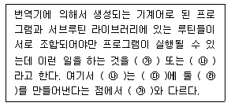
- ㉮ 절대 로더, ㉯ 상대 로더, ㉰ 주기억장치, ㉱ 링킹 로더
- ㉮ 절대 로더, ㉯ 링키지 에디터, ㉰ 보조기억장치, ㉱ 링킹 로더
- ㉮ 링킹 로더, ㉯ 링키지 에디터, ㉰ 보조기억장치, ㉱ 로딩 이미지
- ㉮ 링키지 에디터, ㉯ 링킹 로더, ㉰ 주기억장치, ㉱ 로딩 이미지
(정답률: 72%)
66. 16진수 FA.5를 8진수로 변환한 것으로 옳은 것은?
- 241.218
- 352.228
- 261.238
- 372.248
(정답률: 67%)
67. 32비트 컴퓨터에서 8 Full Word와 6 Nibble은 각각 몇 비트인가?
- 256비트, 48비트
- 128비트, 24비트
- 256비트, 24비트
- 128비트, 48비트
(정답률: 73%)
68. 다음 중 운영체제에 대한 설명으로 옳지 않은 것은?
- 컴퓨터 하드웨어에 대한 자원을 관리하는 소프트웨어이다.
- 응용 프로그램과 하드웨어 자원에 대한 연계 역할을 수행하는 소프트웨어이다.
- 컴퓨터에서 항상 수행되고 있으며, 운영체제의 가장 핵심적인 부분은 커널(Kernel)이다.
- 사용자가 필요하다고 생각되는 경우 쉽게 접근하여 운영체제의 프로그램을 변경할 수 있다.
(정답률: 82%)
69. 다음은 NOR 게이트 진리표이다. 출력 X의 a, b, c, d 값으로 옳은 것은? (단, A, B는 입력이고 X는 출력이다.)
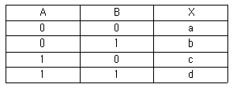
- a=0, b=0, c=0, d=1
- a=1, b=0, c=1, d=1
- a=0, b=1, c=0, d=0
- a=1, b=0, c=0, d=0
(정답률: 80%)
70. 다음 중 운영체제의 목적과 관련된 용어에 대한 설명으로 옳지 않은 것은?
- 이용가능도 : 컴퓨터를 사용하고자 할 때 신속하게 사용할 수 있는 정도
- 응답시간 : 사용자가 컴퓨터에 일을 지시하고 나서 그 결과를 얻기까지 걸리는 시간
- CPU 사용률 : 일정 시간동안 시스템이 처리할 수 있는 일의 양
- 신뢰도 : 주어진 문제를 정확하게 해결하고 작동하는 정도
(정답률: 71%)
71. 다음 중 적합성평가 시험기관의 지정 취소가 되는 경우가 아닌 것은?
- 적당한 사유는 있으나 시험업무를 수행하지 아니한 경우
- 거짓이나 그 밖의 부정한 방법으로 시정을 받은 경우
- 업무 정지명령을 받은 후 그 업무정지 기간에 시험업무를 수행한 경우
- 2회 이상 업무정지 명령을 받은 지정시험기관이 다시 같은 항을 위반하여 업무정지 사유에 해당하는 경우
(정답률: 84%)
72. 다음 중 방송통신기자재로서 적합성평가가 면제되는 경우가 아닌 것은?
- 제품 및 방송통신서비스의 시험ㆍ연구 또는 기술개발을 위한 목적의 기자재(100대 이하)
- 국내에서 판매하기 위하여 수입전용으로 제조하는 기기
- 판매를 목적으로 하지 않고 전시회, 국제경기대회 진행 등 행사에 사용하기 위한 기자재
- 외국의 기술자가 국내 산업체 등의 필요에 따라 일정기간 내에 반출하는 조건으로 반입하는 기자재
(정답률: 73%)
73. 다음 중 적합인증을 받아야 하는 대상기자재가 아닌 것은?
- 가정용 전기기기 및 전동기기류
- 무선전화 정보자동수신기
- 국내 항해용 레이더
- 네비텍스수신기
(정답률: 70%)
74. 미래창조과학부장관은 주파수 이용 실적이 낮은 경우 해당 주파수 회수 또는 주파수 재배치를 할 수 있다. 다음 중 주파수 이용 실적의 판단 기준으로 해당되지 않는 것은?
- 해당 주파수의 이용 현황 및 수요 전망
- 전파이용기술의 발전 추세
- 국제적인 주파수의 사용동향
- 주파수의 양도와 임대 실태
(정답률: 63%)
75. 다음 중 전파법의 목적으로 옳지 않은 것은?
- 공공복리의 증진에 이바지
- 전파의 진흥을 위한 기술전수
- 전파이용 및 전파에 관한 기술개발을 촉진
- 전파의 효율적인 이용에 관한 사항을 정함
(정답률: 60%)
76. 고압전기의 정의로 옳은 것은?
- 600[V]를 초과하는 고주파 및 교류전압의 750[V]를 초과하는 전류
- 650[V]를 초과하는 고주파 및 교류전압의 750[V]를 초과하는 전류
- 750[V]를 초과하는 고주파 및 교류전압의 600[V]를 초과하는 전류
- 600[V]를 초과하는 고주파 및 교류전압의 650[V]를 초과하는 전류
(정답률: 75%)
77. 다음 중 실험국의 개설조건으로 틀린 것은?
- 과학지식의 보급에 공헌할 합리적인 가능성이 있을 것
- 신청인이 그 실험을 수행할 인적자원이 풍부할 것실
- 험의 목적과 내용이 공공복리를 해하지 아니할 것
- 합리적인 실험의 계획과 이를 실행하기 위한 적당한 설비를 갖추고 있을 것
(정답률: 83%)
78. 다음 중 산업용 전파응용설비의 안전시설 설치 조건으로 틀린 것은?
- 충전되는 기구와 전선은 외부에서 닿지 않도록 절연 차폐체 또는 접지된 금속차폐체내에 수용할 것설
- 비의 조작 시 인체와 전기적 양도체에 고주파전력을 유발할 우려가 있는 경우에는 그 위험을 방지하기 위하여 필요한 설비를 할 것
- 인체의 안전을 위하여 접지장치를 설치할 것
- 설비와 대지 간 접지저항 값을 무한대로 설치할 것
(정답률: 87%)
79. 다음 중 전파사용료를 부과하기 위해 산정하는 기준이 아닌 것은?
- 사용주파수 대역
- 사용 전파의 폭
- 공중선 전력
- 무선국의 소비전력
(정답률: 71%)
80. 다음 중 무선설비의 기술기준에서 요구하는 변조특성 및 공중선계의 조건으로 옳지 않은 것은?
- 반송파가 주파수 변조되는 송신장치는 최대주파수편이의 범위를 초과하지 아니할 것
- 공중선은 이득이 높을 것
- 정합은 신호의 반사손실이 최대가 되도록 할 것
- 지향성은 복사되는 전력이 목표하는 방향을 벗어나지 아니하도록 안정적일 것
(정답률: 77%)